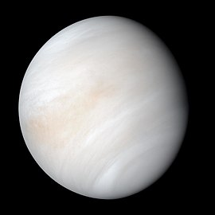

Mercury

Mercury is the closest planet to the Sun and has extreme temperature variations. It is a rocky planet with a thin atmosphere.
Venus
Venus is known for its thick, toxic atmosphere made primarily of carbon dioxide. It has the hottest surface temperature of any planet.
Earth

Earth is the only planet known to support life. It has a breathable atmosphere, liquid water, and a diverse ecosystem.
Mars

Mars, the "Red Planet," has a thin atmosphere and is known for its vast deserts, including the largest volcano in the solar system, Olympus Mons.
Jupiter

Jupiter is the largest planet in our solar system, known for its Great Red Spot, a giant storm, and its many moons.
Saturn

Saturn is famous for its stunning rings made of ice and rock. It is the second-largest planet in our solar system.
Uranus

Uranus is an ice giant with a unique tilted axis, meaning its poles are nearly in the plane of its orbit around the Sun.
Neptune

Neptune is the farthest planet from the Sun, known for its deep blue color caused by methane in its atmosphere and strong winds.